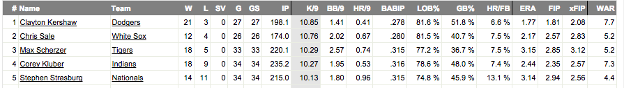

Henry Chadwick invented the baseball box score in 1859. Since then, results of the game have been communicated in more or less the same way. From the backs of baseball cards and newspaper box scores to modern stats websites, the default mode of presentation has been table after table of numbers.
Here's an example from Fangraphs.com, showing starting pitcher leaders from 2014, ordered by strikeouts per nine innings:
Sites like Fangraphs are designed to make it easy to search, filter, and download the numeric representations of results. But that isn't necessarily the optimal way to communicate meaning.
Let's say I was interested in just how good Chris Sale was that year.
The view above will tell me that Sale had 10.76 strikeouts per nine that year, and that he was second overall for the season. Those are, of course, two valuable pieces of information.
But they're lacking a good deal of context. How does that 10.76 figure compare to the average starter? Was it significantly far ahead of most starters?
Large tables of data make it nearly impossible to answer these questions. For one thing, I'd have to scan through multiple pages of tables just to see the figures for all 88 qualified starters that year. And even if I did, I would need to hold each of those points in working memory. And then I would need to process the information in my head.
So understanding the distribution and full context of the data is essentially impossible with tables. But those tasks can be done intuitively and easily with a simple data visualization:
This is a strip plot, a visualization advocated by Stephen Few in his Perceptual Edge newsletter for July - September 2014. This type of display plots the data along a scaled horizontal axis, allowing me to quickly see that Sale was in a close second place by this metric, with some significant distance behind them.
Additionally, the display helps me understand the overall distribution of the data. A red line denotes the median value, while grey boxes show the 25th and 75th percentiles of the dataset. Including these elements helps me to instantly see that the data are left-skewed, which helps underscore the value of high performers on this metric.
| Value | fWAR | |
| Fielding-Independent | FIP | |
| xFIP | ||
| Luck | BABIP | |
| Outcomes | K/9 | |
| BB/9 |